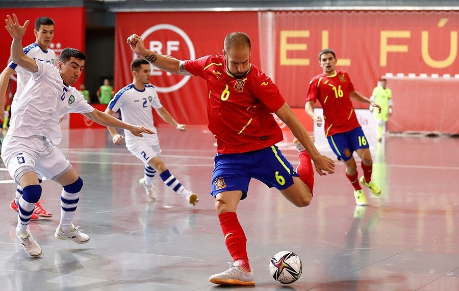
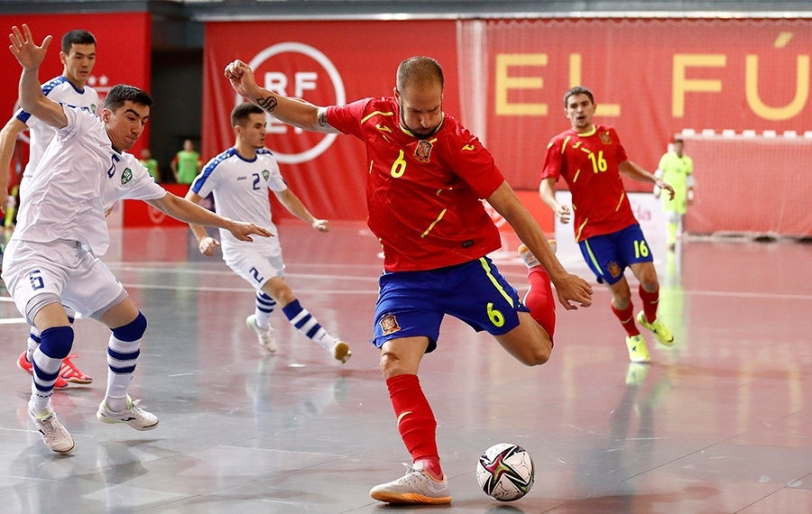

El fútbol de salón, fútbol sala, microfútbol o futsal es un deporte similar al fútbol pero con reglas diferentes, que se juega en piso liso, entre dos equipos de cinco jugadores.El fútbol de salón, fútbol sala, microfútbol o futsal es un deporte similar al fútbol pero con reglas diferentes, que se juega en piso liso, entre dos equipos de cinco jugadores. Hasta finales de la década de 1980, el deporte tuvo una sola regulación, a partir de ahí y durante aproximadamente diez años hubo un interregno que terminó a principios del siglo XXI, desde entonces está reglamentado por dos organizaciones la AMF (entidad que reemplazo a la FIFUSA de forma administrativa y heredó las normas originales) y la FIFA que ha establecido reglas y competencias diferentes, razón por la cual algunos especialistas sostienen que son dos deportes diferentes, llamados futsal o fútbol de salón en el caso de la AMF y también futsal o fútbol sala en el caso de la FIFA.
la El fútbol sala es un deporte de colaboración-oposición. Participan dos equipos compuestos por cinco personas, de las cuales, una ocupa la posición de portero/a. Se juega en una superficie rectangular de 40×20 metros, con una duración de 2 tiempos de 20 minutos a reloj parado.
Podemos diferenciar tres tipos: individual, cuando cada jugador se ocupa de marcar al mismo rival, en zona, cuando cada jugador defiende al rival que ocupa su zona, y mixto, que sería una combinación de ambos.
LAS 25 REGLAS DEL Fútbol SALA.

son goles El equipamiento para el futsal. en Futsal no dista demasiado del equipamiento para jugar fútbol, son camisetas con mangas, pantalones cortos, calcetines, espinilleras de metal, plástico o anime y zapatos con suela de goma.

pases y uniformes
 
